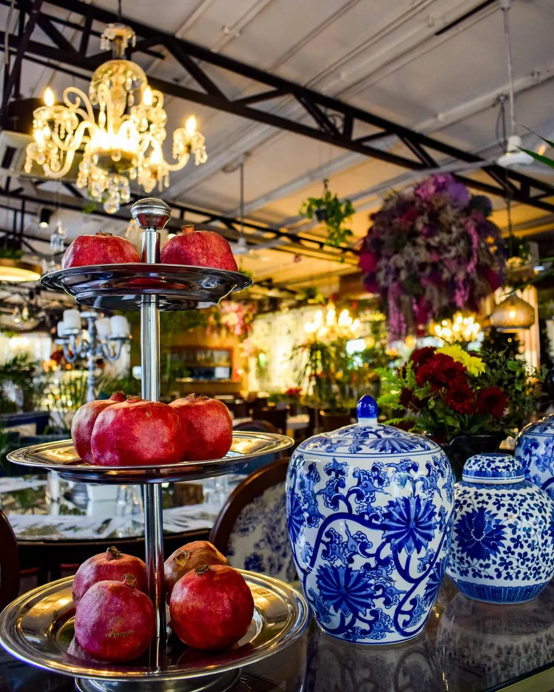
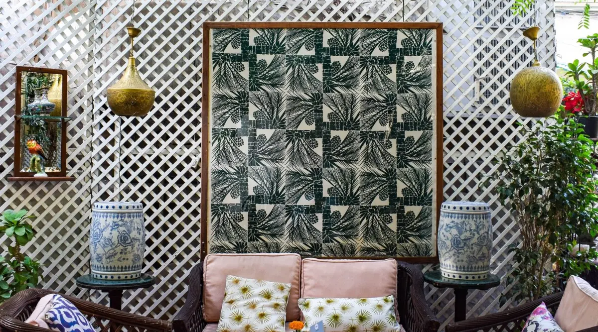
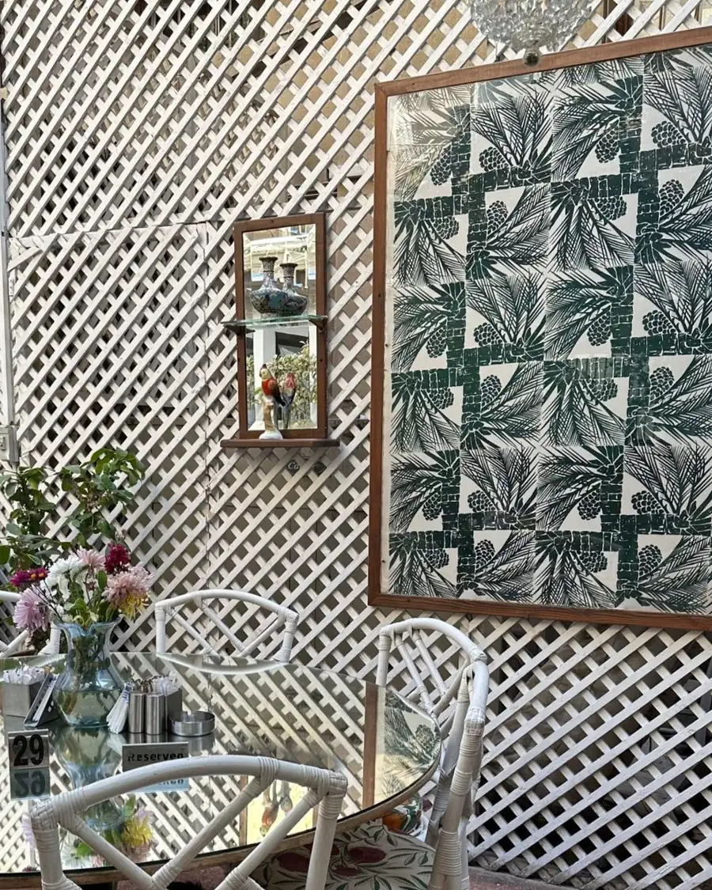
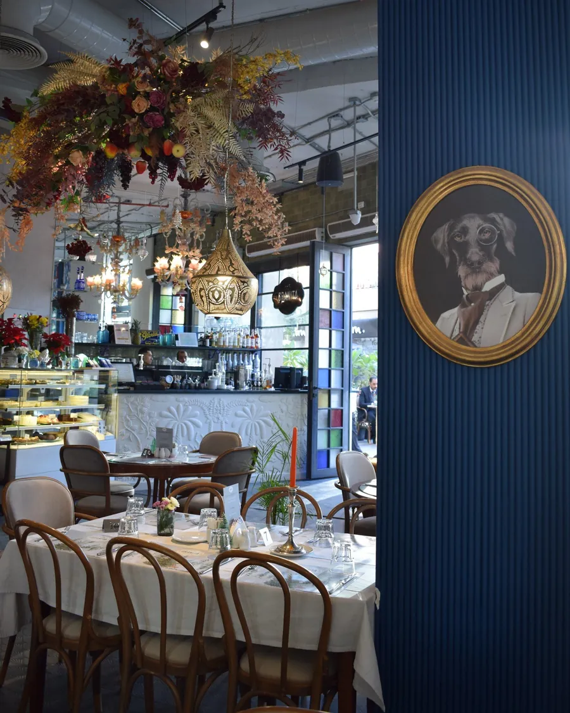
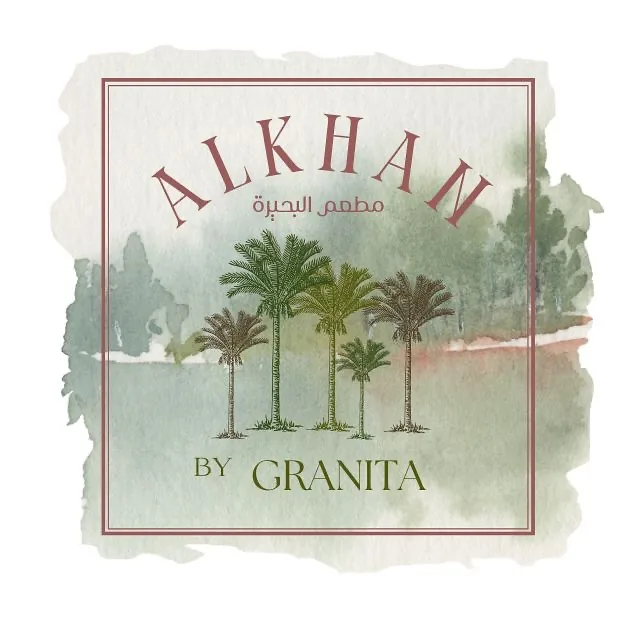
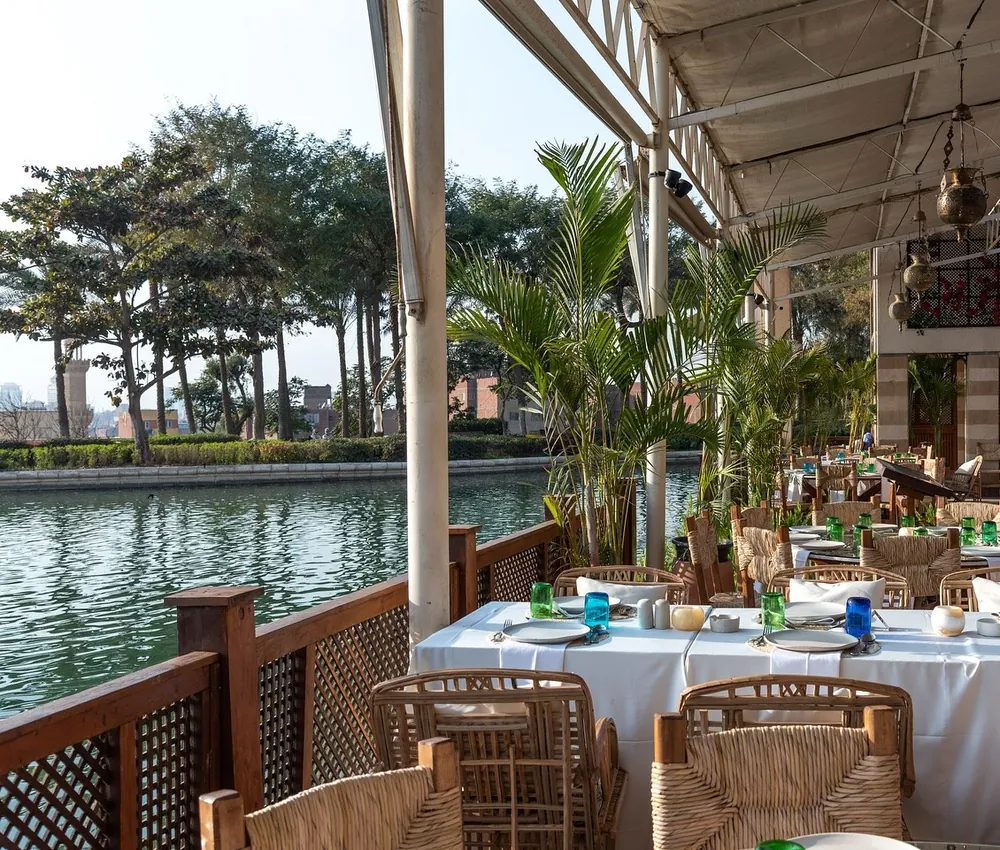

Zamalek
Daily 7 AM to 11 PM
5 Michel Lutfallah St, inside All Saints' Cathedral grounds, Zamalek
Hours can change. Call before you come.
Instagram @granitacairoGranita Zamalek is inside the grounds of All Saints' Cathedral, at 5 Michel Lutfallah St.

The café sits inside the grounds of All Saints' Cathedral, at 5 Michel Lutfallah St, so you reach it through the cathedral compound.
Guests say there is no sign outside, so look for the cathedral grounds rather than a café front.
Guests say the map pin can take you to the back of the café, not the way in.
The Zamalek line is 010 1279 7522. Call it before you set out.


Daily 7 AM to 11 PM
5 Michel Lutfallah St, inside All Saints' Cathedral grounds, Zamalek
Hours can change. Call before you come.
Instagram @granitacairo
Daily 7 AM to 12 AM
Arkan Plaza, Sheikh Zayed
Hours can change. Call before you come.
Instagram @granitacairo
The sister house inside Al Azhar Park, on the lake.
Daily 7 AM to 10 PM
Al Azhar Park, 10 Salah Salem St
Hours can change. Call before you come.
